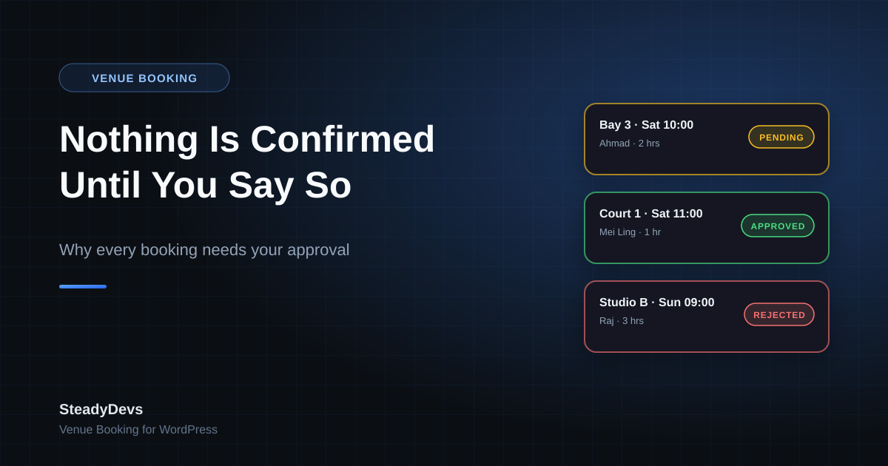

Nothing Is Confirmed Until You Say So: Why Every Booking Needs Approval
A design decision in SteadyDevs Venue Booking that some venue owners push back on at first: every booking needs your approval.
No instant confirmation. The customer picks a slot, submits, and sees that their request is pending. You get it in your WordPress dashboard. You approve, reject or cancel. They get an email the moment you decide, from a template you can edit with a live preview.
"Isn't that more work?" is the usual first reaction. This post is our honest answer: what the approval queue is for, what it costs you in time, and the kind of venue it's wrong for.
Why we made approval mandatory
You know things the form doesn't
The regular who always pays late. The group of eight that booked the small studio but needs the big one. The tournament that's blocking Court 1 next Saturday and hasn't been put in the system yet. A form can only check what it's been told; an owner checks everything else. Approval is the moment that knowledge gets applied.
Approval is where double-booking protection lives
When you approve a booking, the plugin checks for an existing approved booking that overlaps the same resource, date and time, and blocks the approval if it finds one. Because the check and the confirmation are the same action, there's no gap for a second confirmation to slip through. We covered the mechanics in a separate post. Remove approval and you remove the guarantee.
Nothing is promised that you haven't looked at
An instantly-confirmed booking is a promise your website made on your behalf. A pending booking is a request. The difference matters most when you have to say no: cancelling a confirmation feels like a broken promise, while declining a request is just an answer.
What it costs you in practice
Less than people expect. The approval queue is a list in your dashboard: resource, date, time, customer, status. Approving is one click. Rejecting is one click. The customer email goes out automatically either way.
For a venue taking ten to thirty bookings a day, that's a few minutes once or twice a day—usually less time than the WhatsApp back-and-forth it replaces. The owners who've moved off WhatsApp tend to notice the saving within the first week.
A habit that works well: clear the queue at opening and once mid-afternoon. A pending request holds its slot until you act on it, so a quick pass keeps the calendar accurate, and customers see "pending" for at most a few hours.
Who this is wrong for
We'd rather say this plainly than have you find out after installing. If your venue needs bookings to confirm instantly with nobody looking—an unstaffed facility with keypad access, or a high-volume operation where a few hours of "pending" would cost you customers—the current plugin isn't the right fit. Approval can't be switched off.
For most venues that book by the hour—driving ranges, sim bays, racket clubs, studios, treatment rooms, meeting rooms—the owner or front desk is already the person who decides whether a booking works. The plugin keeps them in that seat instead of automating them out of it.
What the customer sees
- They choose a date and time, then a resource, and confirm their details in a 3-step form that only shows available slots.
- They see a message that their request has been received and is awaiting approval.
- When you approve or reject, they receive an email within moments, worded however you've set the template.
- If approved, they turn up. If not, they already know and can book another slot.
Stay in Control of Your Own Calendar
SteadyDevs Venue Booking is free on the WordPress.org plugin directory—live availability, an approval queue, double-booking protection and unlimited resources, with nothing that expires. The Pro edition adds automatic reminders, the Class Portal and more, with a 14-day free trial.
See Plans and Pro FeaturesFrequently Asked Questions
Not in the current plugin. Every booking goes through the queue. If a partial auto-confirm rule would make the difference for your venue, let us know—requests like that shape what we build next.
Yes. Approval and rejection each trigger an email to the customer automatically, using HTML templates you can edit and preview in the dashboard.
In the free plugin, approving bookings requires an administrator account on your WordPress site. If you need a front-desk login that can manage the day's bookings without full admin rights, tell us—it's one of the most requested additions.
It keeps holding its slot—pending and approved bookings both occupy their time on the form, and only rejecting or cancelling releases it. So an ignored request quietly blocks that slot for everyone else. Clear the queue daily and reject what you won't honour.